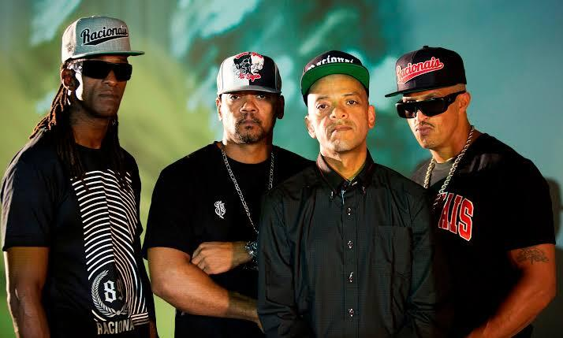
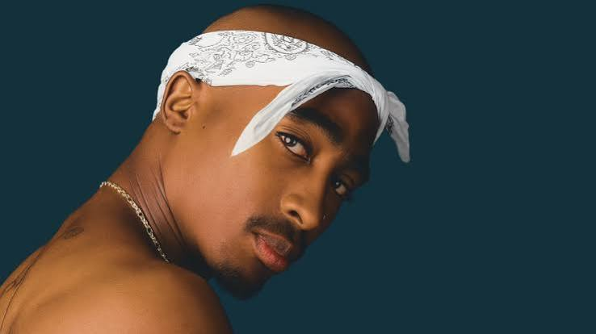

×

Mais do que um género musical: vivências, críticas, resistência e expressão.
A Street Verse é uma marca que nasce da vontade de mostrar a força do rap e tudo aquilo que ele representa dentro da cultura.
Nossa proposta é trazer para perto as letras significativas, as histórias, as características marcantes e a identidade que fazem do rap muito mais do que apenas um gênero musical.
Mas existe muito mais por trás de cada verso: vivências, críticas, resistência, criatividade e expressão.
Clica no cartão de cada artista para descobrir o seu impacto cultural, mensagem e discografia.

A maior referência de resistência e voz ativa da periferia no Brasil.
Genialidade lírica, flow inconfundível e o retrato poético da favela.

Poetismo visceral, igualdade racial e lutas sociais no hip-hop internacional.
Um dos maiores líricos da história e autor do clássico absoluto Illmatic.
O rap emergiu nas festas de rua no Bronx como forma de protesto e celebração da juventude negra e latina, tornando-se o canal vocal do movimento Hip-Hop.
Na década de 80, a Praça da Sé e a estação São Bento em São Paulo viraram os berços do rap nacional, usando o ritmo para expor a desigualdade e o racismo estrutural.
O Rap integra o Hip-Hop ao lado do DJing, Breakdance e Graffiti. É a síntese da arte urbana em constante movimento e transformação social.
Ouve diferentes subgéneros (Boom Bap, Trap, Drill). Presta atenção à métrica e às construções de rima dos mestres.
Anota ideias, frases e relatos sobre o teu quotidiano num caderno. O rap autêntico vem da observação real.
Pratica rimar em cima de diferentes BPMs. Encontra o teu tempo, encaixe de sílabas e respiração natural no tempo da batida.
Não tentes copiar o tom de ninguém. O valor do rap está na verdade e no timbre único da tua própria mensagem.
Cria os teus ritmos! Clica nos pads abaixo ou usa o sequenciador de 8 passos para programar a tua batida.